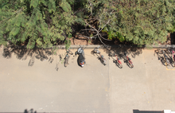
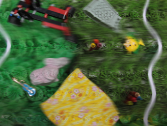
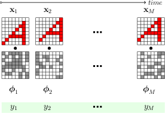
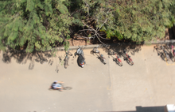

|  |
Illumination robust change detection with CMOS imaging sensors
Vijay Rengarajan, Sheetal B. Gupta, A.N. Rajagopalan, and Guna Seetharaman
SPIE Defense + Security Symposium, 2015. (Accepted)
|
|  |
Change Detection in the Presence of Motion Blur and Rolling Shutter Effect
Vijay Rengarajan, A.N. Rajagopalan, and R. Aravind
European Conference on Computer Vision, September 2014
PDF |
|  |
Motion Estimation and Classification in Compressive Sensing from Dynamic Measurements
Vijay Rengarajan, A.N. Rajagopalan, and R. Aravind
International Conference on Pattern Recognition, August 2014 PDF |
|  |
Efficient Change Detection for Very Large Motion Blurred Images
Vijay Rengarajan, Abhijith Punnappurath, A.N. Rajagopalan, and Guna Seetharaman
CVPR Workshop on Registration of Very Large Images, June 2014 PDF Slides |